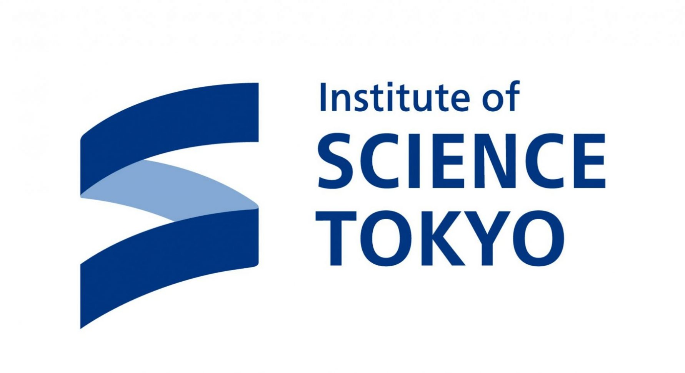
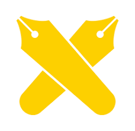

Education学歴
- 2023–2026

Institute of Science Tokyo 🇯🇵 (formerly Tokyo Institute of
Technology)
東京科学大学 🇯🇵 （旧 東京工業大学）
Ph.D. in Computer Science, Advisor: Prof. Naoaki
Okazaki博士（学術）、指導教員：岡崎 直観 教授
- 2021–2023

Keio University 🇯🇵慶應義塾大学 🇯🇵
M.S. in Computer Science, Advisor: Prof.
Masafumi Hagiwara修士（工学）、指導教員：萩原 将文 教授
- 2017–2021
Keio University 🇯🇵慶應義塾大学 🇯🇵
B.S. in Computer Science, Advisor: Prof.
Masafumi Hagiwara学士（工学）、指導教員：萩原 将文 教授
|
Grants奨学金・研究助成
- 2024
Tokyo Institute of Technology東京工業大学
Research Funds: 900,000 JPY (≈ 6,000 USD)研究費: 900,000円
- 2024
The Ministry of Education, Culture, Sports, Science and
Technology (MEXT)文部科学省
Scholarship: 1,920,000 JPY (≈ 12,100 USD) per year ·
Preparation Funds: 350,000 JPY (≈ 2,200 USD)奨学金: 年額 1,920,000円 · 留学準備金:
350,000円
Acceptance rate 16.7%採択率 16.7%
- 2024–2026
Tokyo Institute of Technology東京工業大学
Scholarship: 2,160,000 JPY (≈ 14,400 USD) per year · Research
Funds: 300,000 JPY (≈ 2,000 USD) per year奨学金: 年額 2,160,000円 · 研究費: 年額
300,000円
Full Tuition Exemption授業料全額免除
- 2023–2024
Tokyo Institute of Technology東京工業大学
Scholarship: 1,800,000 JPY (≈ 12,000 USD) per year · Research
Funds: 300,000 JPY (≈ 2,000 USD) per year奨学金: 年額 1,800,000円 · 研究費: 年額
300,000円
Full Tuition Exemption授業料全額免除
|
Talks講演
- 2026
Machine Text Detectors are Membership Inference Attacks
Invited talk · Google Privacy ML Seminar · Virtual · Feb. 4,
2026招待講演 · Google Privacy ML Seminar · オンライン · 2026年2月4日
|
Honors受賞・表彰
- 2026
PhD Graduate Representative卒業生総代
Department of Computer Science, School of Computing, Institute
of Science Tokyo.
東京科学大学 情報理工学院 情報工学系 知能情報コース
- 2026
The 32th Annual Meeting of The Association for Natural
Language Processing (NLP 2026).
言語処理学会第32回年次大会 (NLP2026)
- 2026
The 32th Annual Meeting of The Association for Natural
Language Processing (NLP 2026).
言語処理学会第32回年次大会 (NLP2026)
- 2025
Journal of Natural Language Processing. 2025.
言語処理学会論文誌「自然言語処理」, 2025年
- 2025
The 20th Symposium of Young Researcher Association for NLP
Studies (YANS 2025).
第20回 NLP若手の会シンポジウム (YANS2025)
- 2025
The 20th Symposium of Young Researcher Association for NLP
Studies (YANS 2025).
第20回 NLP若手の会シンポジウム (YANS2025)
- 2024
The 19th Symposium of Young Researcher Association for NLP
Studies (YANS 2024).
第19回 NLP若手の会シンポジウム (YANS2024)
- 2023
The 18th Symposium of Young Researcher Association for NLP
Studies (YANS 2023).
第18回 NLP若手の会シンポジウム (YANS2023)
- 2020
Kaggle, Mechanisms of Action (MoA) Prediction, 2020.
|
Academic Service学術活動
- Reviewer査読
Reviewer / Program Committee査読・プログラム委員
ACL 2023–26EMNLP 2024–25ICLR 2026–27ICML 2026NeurIPS
2025AAAI 2026–27COLM 2026COLING 2025AACL 2025
- Journal論文誌
Journal Reviewer論文誌査読
- Organizer運営
Workshop / Shared Task Organizer · COLING 2025ワークショップ・シェアードタスク運営 · COLING 2025
|
|